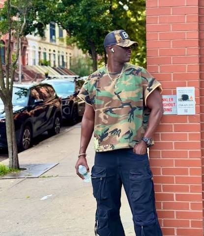
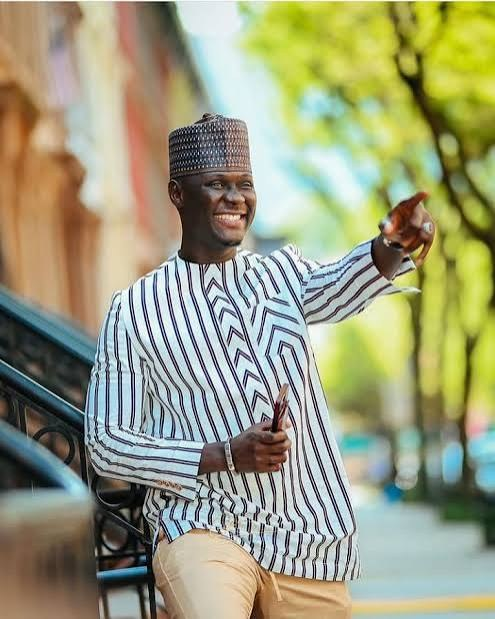
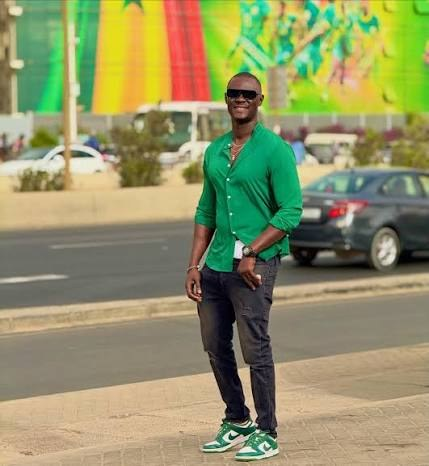
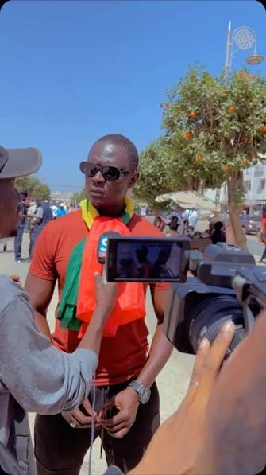
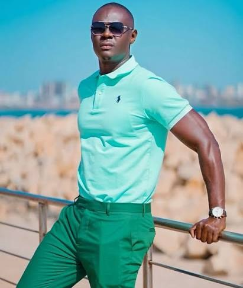

Humour & divertissement
Des vidéos, des moments spontanés et une bonne dose de bonne humeur. Parce que le rire et le partage occupent une place importante dans mon univers.
Bienvenue sur mon site officiel
Une voix authentique. Plusieurs facettes. Une seule communauté.
Créateur de contenu sénégalais établi aux États-Unis, je partage avec ma communauté ce qui me passionne : l’humour, la famille, la culture, les questions de société et l’actualité.
À travers mes vidéos, mes directs et mes échanges, je cultive un lien avec les Sénégalais d’ici et d’ailleurs.
Humour • Famille • Culture • Société • Actualité

Mon parcours
Sankara Mbaye est un créateur de contenu et une personnalité des réseaux sociaux sénégalais, établi aux États-Unis.
Au fil des années, il s’est fait connaître à travers des vidéos, des directs et des échanges avec sa communauté. Son univers mêle humour, moments familiaux, culture sénégalaise, questions de société et commentaires sur l’actualité.
Son parcours témoigne de la diversité de ses centres d’intérêt et de sa volonté de rester en contact avec les Sénégalais, qu’ils vivent au pays ou dans la diaspora.
À travers ses différentes prises de parole, Sankara partage son regard personnel sur les sujets qui l’interpellent, tout en continuant à proposer des contenus divertissants et des moments de proximité avec son public.
Un parcours, des convictions personnelles et une communauté qui continue de grandir.
Mon univers

Des vidéos, des moments spontanés et une bonne dose de bonne humeur. Parce que le rire et le partage occupent une place importante dans mon univers.
Des souvenirs, des moments de complicité et des instants du quotidien qui rappellent l’importance des liens familiaux.

Un attachement à mes racines sénégalaises, à nos traditions et à cette richesse culturelle que nous partageons au-delà des frontières.
Des réflexions, des échanges et des opinions personnelles sur les sujets qui font l’actualité au Sénégal et dans la diaspora.
Vidéos & directs
Retrouvez mes vidéos, mes directs, mes échanges et les moments qui font vivre ma communauté. Entre divertissement, discussions et actualité, découvrez les différentes facettes de mon univers.
Mes racines, mon ouverture sur le monde
Vivre à l’étranger ne signifie pas perdre le lien avec ses origines.
À travers mes contenus et mes échanges, je garde une place importante pour le Sénégal, sa culture, ses réalités et les conversations qui animent notre communauté.
Qu’ils soient à Dakar, à New York, à Paris, à Montréal ou ailleurs, les Sénégalais partagent des histoires, des expériences et des aspirations qui nous rapprochent.
C’est aussi cette connexion que je souhaite faire vivre à travers mon univers numérique.

Revue de presse
Retrouvez une sélection d’articles, de reportages et de publications consacrés à mon parcours et à mes interventions publiques.
Article d’opinion publié par Dakarposte sur le parcours public de Sankara Mbaye. Il reflète le point de vue de la publication.
Lire sur Dakarposte ↗Reportage vidéo publié par Seneweb.
Lire sur Seneweb ↗Vidéo publiée par Senegal7.
Lire sur Senegal7 ↗Les articles reflètent le point de vue de leurs auteurs et des publications concernées.
Des moments, des rencontres, des souvenirs et quelques images de mon quotidien.

Opportunités & partenariats
Marques, organisateurs, médias et associations : travaillons ensemble pour toucher une communauté sénégalaise engagée, au pays et dans la diaspora.
Une question, une proposition ou une demande professionnelle ? Envoyez votre message à l’aide du formulaire ci-dessous.